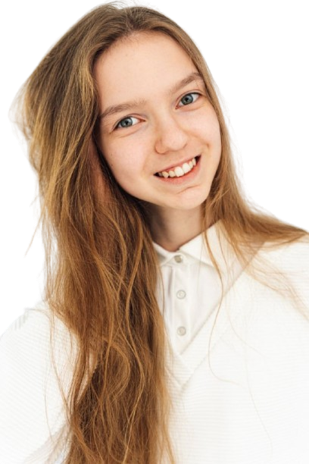

Об авторе

Меня зовут Марина. Я учусь в Гимназии №1 города Новополоцка. Моя учебная и творческая жизнь строится вокруг двух важных для меня мест — это школа и Дворец детей и молодёжи.

В школе я показываю стабильные результаты в учёбе, особый интерес у меня вызывает биология. Мои старания не остаются незамеченными — я являюсь участницей городских олимпиад по биологии, где дважды становилась обладательницей дипломов второй степени. Кроме того, я принимала участие в городской летней научно-исследовательской школе «ПРОФИль», где получила диплом третьей степени. Эти победы стали для меня подтверждением того, что выбранное направление — действительно моё.


Во Дворце детей и молодёжи я реализую свой потенциал в исследовательской и творческой деятельности. Особенно значимыми для меня стали два конкурса. В конкурсе «Симфония космоса» я удостоилась диплома первой степени — это была возможность соединить науку и вдохновение. Также я участвовала в конкурсе «Квант» с защитой собственного проекта, где получила диплом третьей степени. Участие в этом конкурсе дало мне ценный опыт публичной защиты и умение аргументированно представлять свои идеи.


Каждая победа — это результат совместной работы с моими наставниками и собственной дисциплины. Я благодарна своим учителям и педагогам за поддержку и веру в меня, а себе — за целеустремлённость и желание двигаться вперёд.